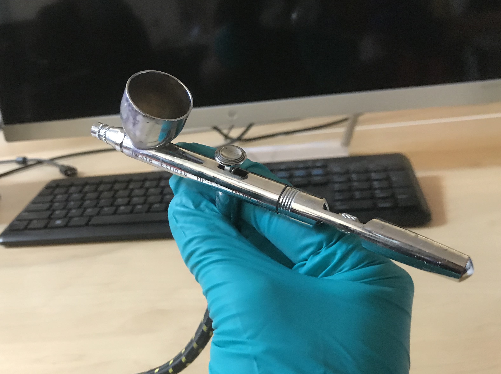
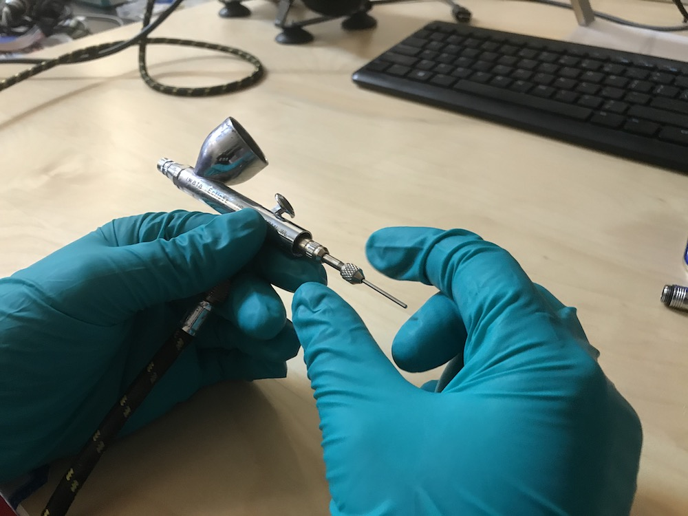
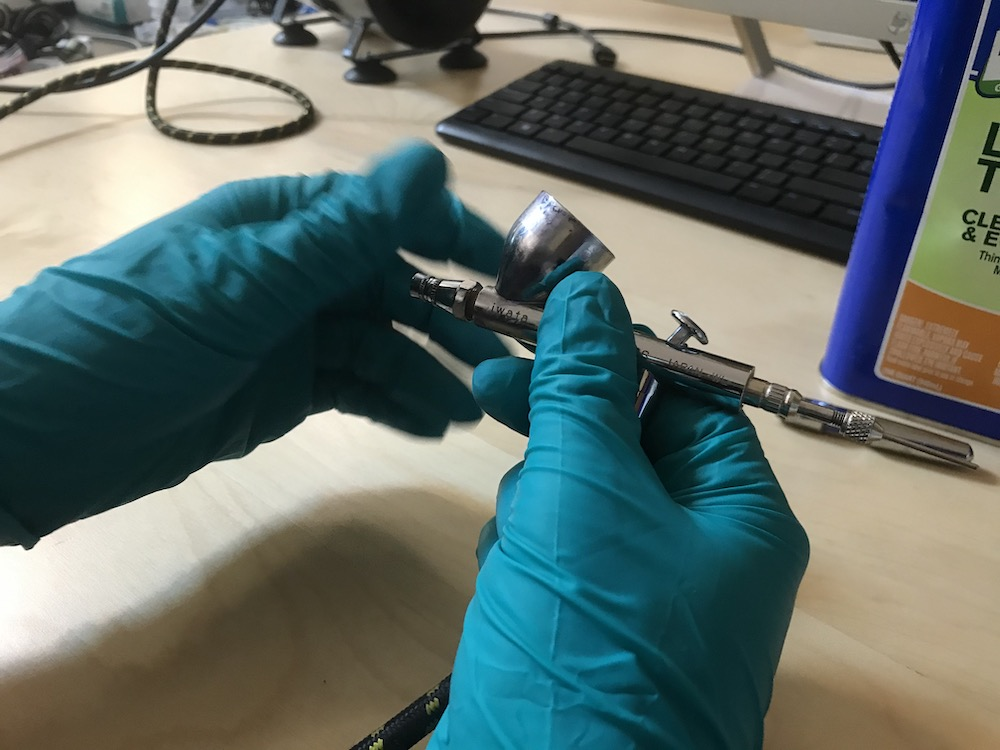
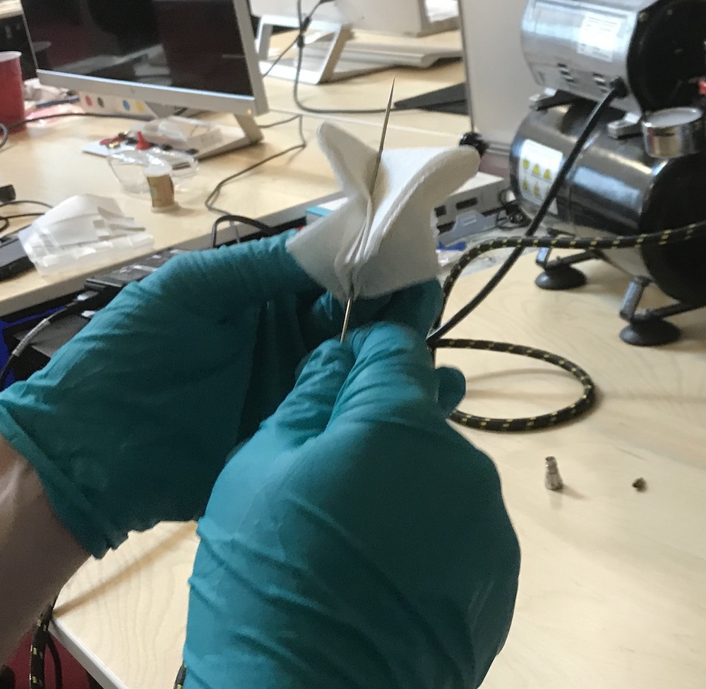
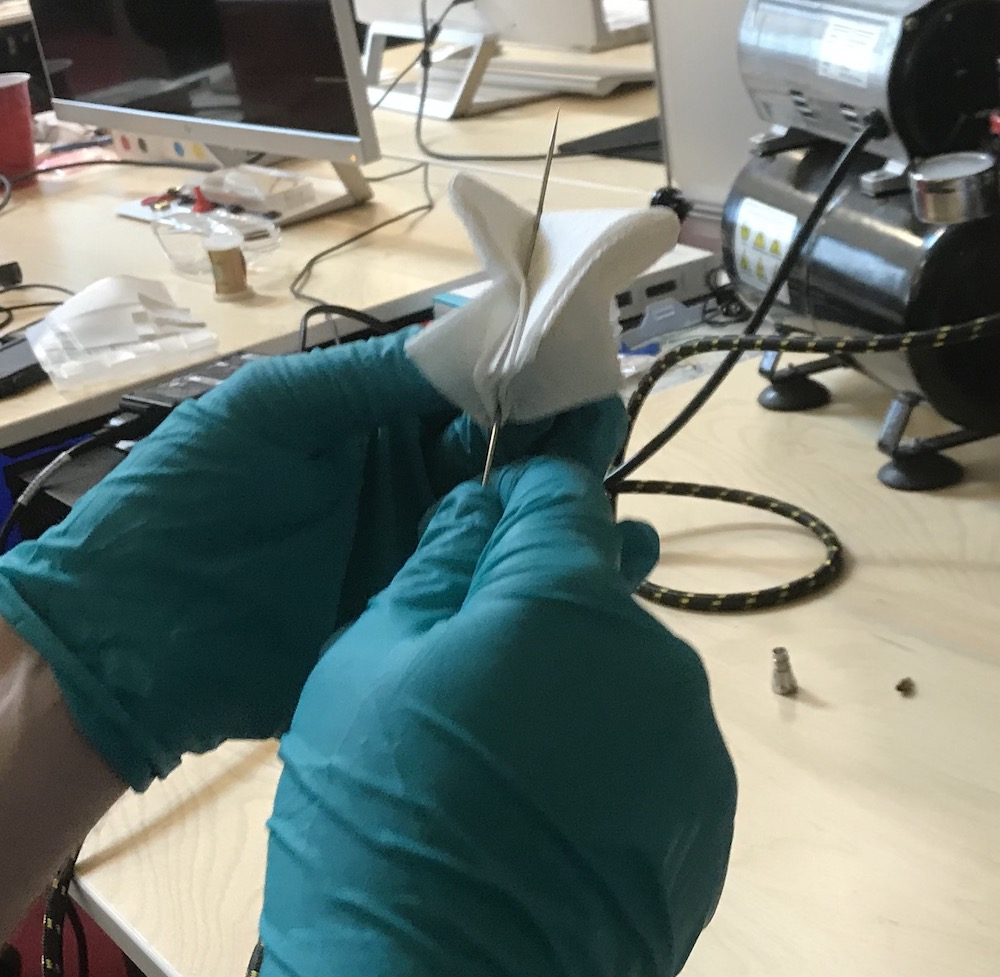
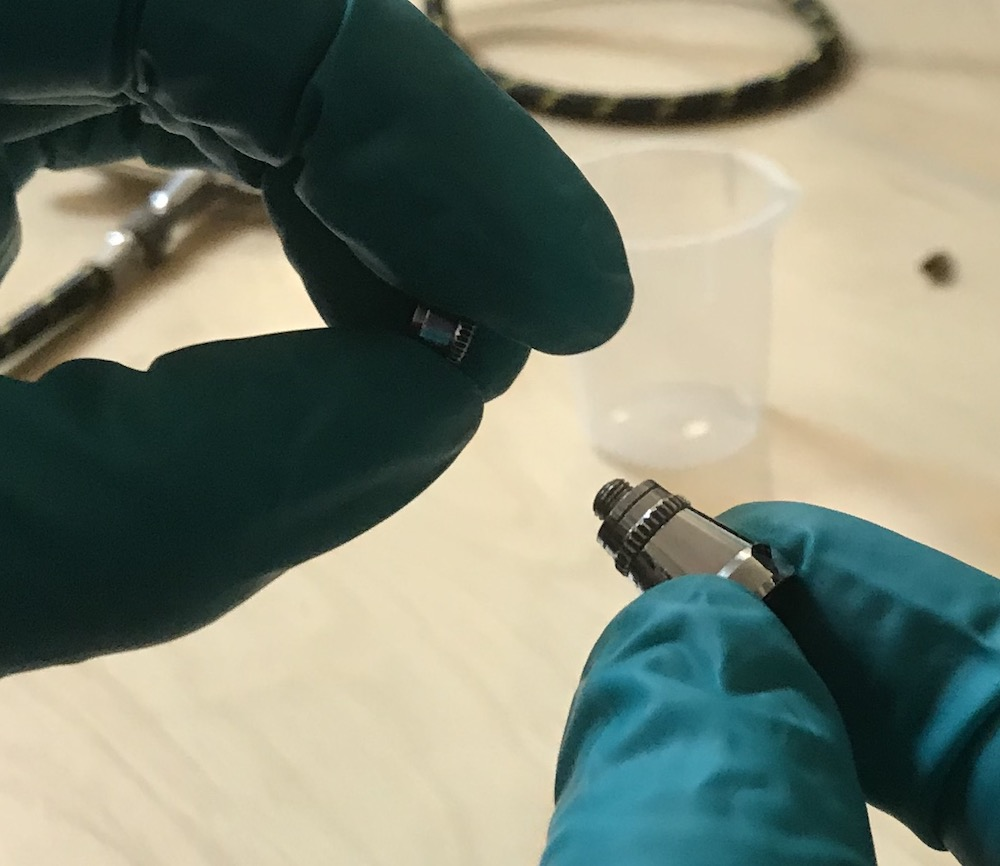
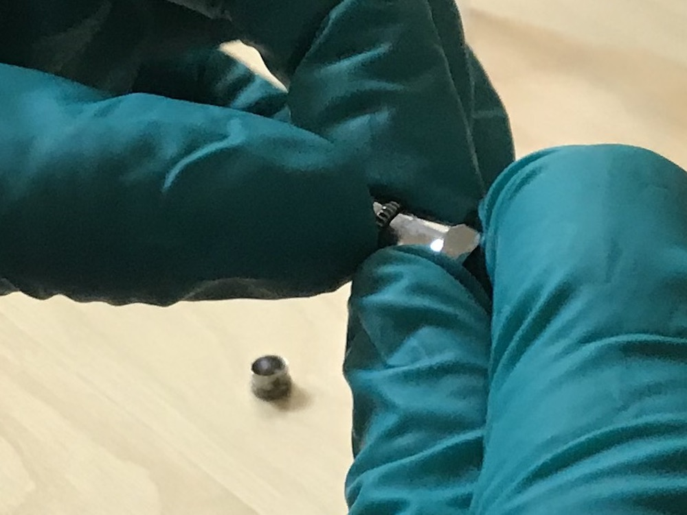
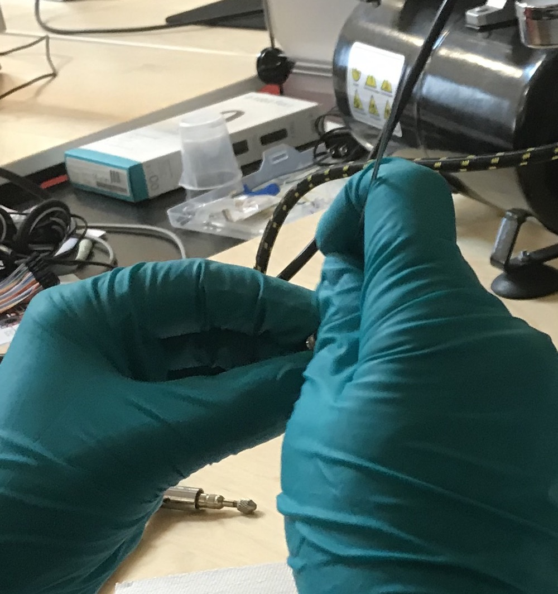
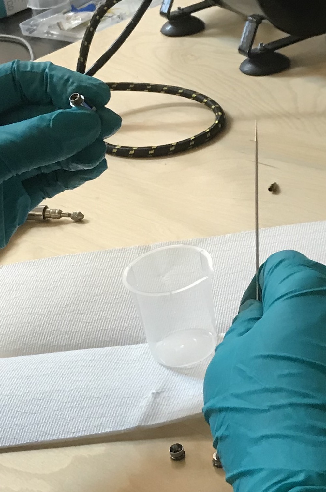
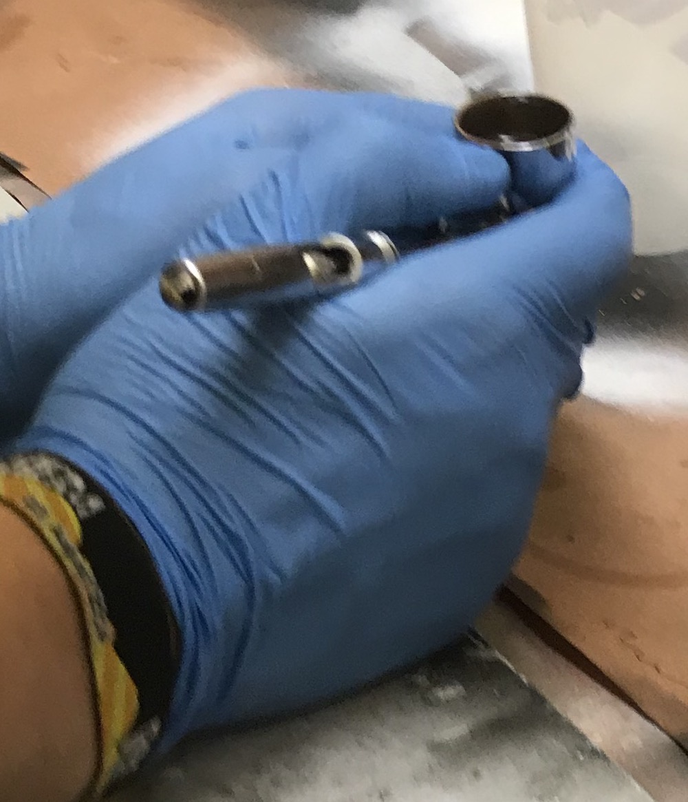

6.810 Engineering Interactive Technologies (fall 2020)
Cleaning the Airbrush
Before you can airbrush anything, you need to clean the airbrush.
There is both an (1) extensive cleaning procedure, and (2) a light cleaning procedure.
If the airbrush has not been used for 3 or more days, you need to perform the (1) extensive cleaning as outlined below.
If the airbrush was in use more recently, you can do the (2) light cleaning procedure explained in the next section.
(1) Extensive Cleaning the Airbrush
Safety Wear for Cleaning
You need to wear a lab coat and gloves for this cleaning procedure.
Disassembling Airbrush
First you need to screw off the back of the airbrush as shown below.


Also open up the metal screw at the back (check where the fingers are pointing).
You don't have to remove it, but you need to open it so the needle (metal stick sticking out) can move back and forth.
Next, screw off the front part of the airbrush like shown below.


Also screw off the golden part from the front (compare the left and right image, see both components on the table in the back on the right image below).

Next, remove the needle from the airbrush casing.
Depending on how dried out the inks were, the harder it may be to remove the needle.
Hammer it on a covered surface to remove, but please only apply force on the backside not the front.


Clearning Airbrush Parts
Next, put some laquer thinner on a paper tissue.
Rub the needle with the paper tissue. Only rub from one side, applying motion from the back (non-sharp) towards the front (sharp side). Never rub back and forth or you will hurt yourself with the needle tip.
 

Put the needle aside and clean the back parts as well.
For this, you first have to further disassemble them.



Once you have the three parts on the table as shown above, you can clean them.
For this, put a bit of laquer thinner into a cup.
Then use the needle of the airbrush, dip it into the laquer thinner, and then insert the needle into the different components and rub it a bit around to remove any debris inside the part.
If you have Qtips you can also use a Qtip.


Re-assembling Airbrush
Now that you have everything cleaned, you need to put everything back together!
First insert the needle into the airbrush.
Then assemble and attach the front pieces.
Then assemble and attach the back piece and add the back enclosure.
(2) Light Cleaning the Airbrush
You need to perform this procedure if the airbrush was not used in the last 15 minutes but within the last 3 days (yes ink dries inside quickly).
You also need to perform this procedure if you want to switch to a different ink.
Before starting, turn on the compressor.
First, fill some laquer thinner into the airbrush tank until about 2/3 full.

Next, press your finger onto the front of the airbrush where the air / ink normally exits.
It's a good idea to use your non-dominant hand for this (i.e. if you hold the airbrush with your right hand, use the thumb of your left hand to close the front of the airbrush).

While pressing really hard with your left thumb to keep the front of the airbrush closed, push down on the airbrush knob to open the air connection to the compressor. You should feel air pressing towards your thumb. Keep it closed.
Carefully pull back on the airbrush knob, you will see that the laquer thinner in the tank will start to bubble. Slowly pull the airbrush knob further back until you see a decent amount of bubbling. Hold everything in this position for about 1-2 minutes to give the tank a good cleaning.

Afterwards, pour our the ink into one of the liquid trash containers and rub the metal area with a wipe.
If you still see any particles inside the airbrush ink container, pour in more lacquer thinner and repeat the procedure.
We typically have to do this 2-3 times until everything is clean enough.
Once you are done, turn off the compressor.
If you want to spray now, you can read this tutorial on preparing the inks or this tutorial on safety wear and spraying.